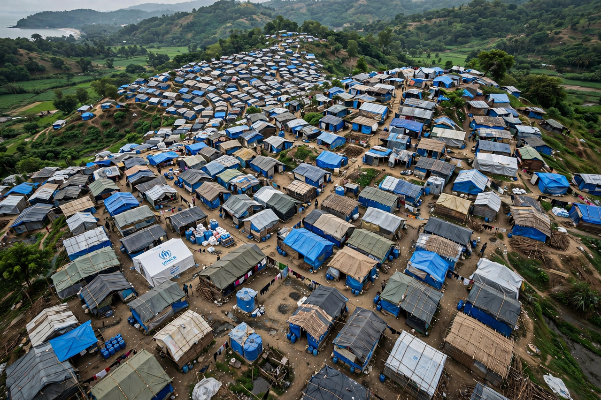

Rohingya people

Rohingya
| Regions | Rakhine State, Myanmar; Cox's Bazar, Bangladesh; diaspora |
|---|---|
| Population | Estimates vary; over 1 million in Bangladesh refugee camps, several hundred thousand remaining in Myanmar |
| Languages | Rohingya (an Indo-Aryan language related to Chittagonian) |
| Religion | Predominantly Islam |
| Status | Stateless; denied citizenship in Myanmar |
The Rohingya people are a stateless Indo-Aryan ethnic group who predominantly follow Islam and reside in Rakhine State, Myanmar. Their language, Rohingya, is related to the Chittagonian dialect of Bengali, reflecting the region's history at the frontier of Burma and Bengal. Myanmar's government and much of its Buddhist majority regard the Rohingya as illegal immigrants from Bangladesh — officially terming them "Bengali" — and deny them citizenship; the Rohingya maintain that they are indigenous to Rakhine, where Muslim communities have existed for centuries.
History
Muslim settlement in the Arakan (Rakhine) region dates to at least the medieval period and grew under the Mrauk U kingdom and during British colonial rule in Burma (1824–1948), when large-scale migration from Bengal occurred. After Burmese independence, Rohingya were initially recognised as citizens and some served in parliament, but the 1962 military coup began decades of progressive disenfranchisement. The 1982 Citizenship Law excluded the Rohingya from the list of recognised "national races", rendering most stateless. Military operations in 1978 and 1991–92 drove hundreds of thousands into Bangladesh, most of whom later returned under repatriation agreements.
Persecution and the 2017 crisis
Communal violence in Rakhine State in 2012 displaced well over 100,000 Rohingya into internal camps. In October 2016 and again in August 2017, attacks on security posts by the Arakan Rohingya Salvation Army (ARSA) triggered military "clearance operations" characterised by the UN High Commissioner for Human Rights as a "textbook example of ethnic cleansing". The 2017 campaign — involving mass killings, sexual violence, and the burning of villages — drove an estimated 740,000 Rohingya across the border into Bangladesh within weeks, creating the world's largest refugee settlement around Cox's Bazar. A UN fact-finding mission concluded that the operations were carried out with "genocidal intent" and recommended prosecution of senior generals.
Legal proceedings and current situation
In 2019 The Gambia filed a case against Myanmar at the International Court of Justice alleging violations of the Genocide Convention; the Court indicated provisional measures in January 2020 ordering Myanmar to prevent genocidal acts, and rejected Myanmar's preliminary objections in 2022. The International Criminal Court has separately authorised an investigation into deportation and related crimes. Roughly 600,000 Rohingya remain in Rakhine State, many confined to camps and villages under severe movement restrictions, while repatriation efforts have repeatedly stalled. Since Myanmar's 2021 coup and renewed fighting in Rakhine, including clashes involving the Arakan Army in 2024, further Rohingya displacement has occurred, and conditions in the Bangladesh camps — overcrowded, fire-prone, and dependent on declining aid — remain precarious.
See also: Rakhine State · Genocide · Statelessness · Myanmar